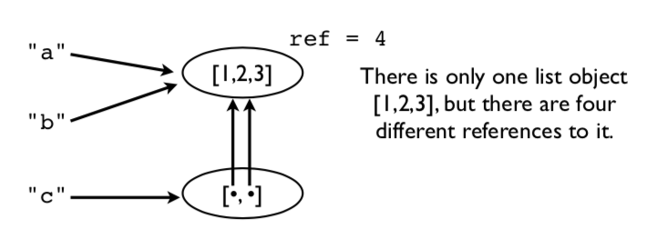
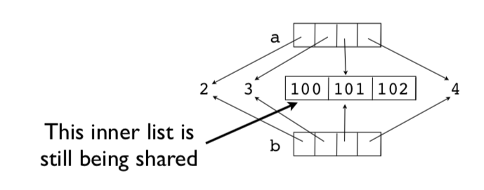

2.7 Objects¶
This section introduces more details about Python's internal object model and discusses some matters related to memory management, copying, and type checking.
Assignment¶
Many operations in Python are related to assigning or storing values.
a = value # Assignment to a variable
s[n] = value # Assignment to a list
s.append(value) # Appending to a list
d['key'] = value # Adding to a dictionary
A caution: assignment operations never make a copy of the value being assigned. All assignments are merely reference copies (or pointer copies if you prefer).
Assignment example¶
Consider this code fragment.
a = [1,2,3]
b = a
c = [a,b]
A picture of the underlying memory operations. In this example, there
is only one list object [1,2,3], but there are four different
references to it.

This means that modifying a value affects all references.
>>> a.append(999)
>>> a
[1,2,3,999]
>>> b
[1,2,3,999]
>>> c
[[1,2,3,999], [1,2,3,999]]
>>>
Notice how a change in the original list shows up everywhere else (yikes!). This is because no copies were ever made. Everything is pointing to the same thing.
Reassigning values¶
Reassigning a value never overwrites the memory used by the previous value.
a = [1,2,3]
b = a
a = [4,5,6]
print(a) # [4, 5, 6]
print(b) # [1, 2, 3] Holds the original value
Remember: Variables are names, not memory locations.
Some Dangers¶
If you don't know about this sharing, you will shoot yourself in the foot at some point. Typical scenario. You modify some data thinking that it's your own private copy and it accidentally corrupts some data in some other part of the program.
Comment: This is one of the reasons why the primitive datatypes (int, float, string) are immutable (read-only).
Identity and References¶
Use the is operator to check if two values are exactly the same object.
>>> a = [1,2,3]
>>> b = a
>>> a is b
True
>>>
is compares the object identity (an integer). The identity can be
obtained using id().
>>> id(a)
3588944
>>> id(b)
3588944
>>>
Note: It is almost always better to use == for checking objects. The behavior
of is is often unexpected:
>>> a = [1,2,3]
>>> b = a
>>> c = [1,2,3]
>>> a is b
True
>>> a is c
False
>>> a == c
True
>>>
Shallow copies¶
Lists and dicts have methods for copying.
>>> a = [2,3,[100,101],4]
>>> b = list(a) # Make a copy
>>> a is b
False
It's a new list, but the list items are shared.
>>> a[2].append(102)
>>> b[2]
[100,101,102]
>>>
>>> a[2] is b[2]
True
>>>
For example, the inner list [100, 101, 102] is being shared.
This is known as a shallow copy. Here is a picture.

Deep copies¶
Sometimes you need to make a copy of an object and all the objects contained within it.
You can use the copy module for this:
>>> a = [2,3,[100,101],4]
>>> import copy
>>> b = copy.deepcopy(a)
>>> a[2].append(102)
>>> b[2]
[100,101]
>>> a[2] is b[2]
False
>>>
Names, Values, Types¶
Variable names do not have a type. It's only a name. However, values do have an underlying type.
>>> a = 42
>>> b = 'Hello World'
>>> type(a)
<type 'int'>
>>> type(b)
<type 'str'>
type() will tell you what it is. The type name is usually used as a function
that creates or converts a value to that type.
Type Checking¶
How to tell if an object is a specific type.
if isinstance(a, list):
print('a is a list')
Checking for one of many possible types.
if isinstance(a, (list,tuple)):
print('a is a list or tuple')
*Caution: Don't go overboard with type checking. It can lead to excessive code complexity. Usually you'd only do it if doing so would prevent common mistakes made by others using your code. *
Everything is an object¶
Numbers, strings, lists, functions, exceptions, classes, instances, etc. are all objects. It means that all objects that can be named can be passed around as data, placed in containers, etc., without any restrictions. There are no special kinds of objects. Sometimes it is said that all objects are "first-class".
A simple example:
>>> import math
>>> items = [abs, math, ValueError ]
>>> items
[<built-in function abs>,
<module 'math' (builtin)>,
<type 'exceptions.ValueError'>]
>>> items[0](-45)
45
>>> items[1].sqrt(2)
1.4142135623730951
>>> try:
x = int('not a number')
except items[2]:
print('Failed!')
Failed!
>>>
Here, items is a list containing a function, a module and an
exception. You can directly use the items in the list in place of the
original names:
items[0](-45) # abs
items[1].sqrt(2) # math
except items[2]: # ValueError
With great power comes responsibility. Just because you can do that doesn't mean you should.
Exercises¶
In this set of exercises, we look at some of the power that comes from first-class objects.
Exercise 2.24: First-class Data¶
In the file Data/portfolio.csv, we read data organized as columns that look like this:
name,shares,price
"AA",100,32.20
"IBM",50,91.10
...
In previous code, we used the csv module to read the file, but still
had to perform manual type conversions. For example:
for row in rows:
name = row[0]
shares = int(row[1])
price = float(row[2])
This kind of conversion can also be performed in a more clever manner using some list basic operations.
Make a Python list that contains the names of the conversion functions you would use to convert each column into the appropriate type:
>>> types = [str, int, float]
>>>
The reason you can even create this list is that everything in Python
is first-class. So, if you want to have a list of functions, that’s
fine. The items in the list you created are functions for converting
a value x into a given type (e.g., str(x), int(x), float(x)).
Now, read a row of data from the above file:
>>> import csv
>>> f = open('Data/portfolio.csv')
>>> rows = csv.reader(f)
>>> headers = next(rows)
>>> row = next(rows)
>>> row
['AA', '100', '32.20']
>>>
As noted, this row isn’t enough to do calculations because the types are wrong. For example:
>>> row[1] * row[2]
Traceback (most recent call last):
File "<stdin>", line 1, in <module>
TypeError: can't multiply sequence by non-int of type 'str'
>>>
However, maybe the data can be paired up with the types you specified
in types. For example:
>>> types[1]
<type 'int'>
>>> row[1]
'100'
>>>
Try converting one of the values:
>>> types[1](row[1]) # Same as int(row[1])
100
>>>
Try converting a different value:
>>> types[2](row[2]) # Same as float(row[2])
32.2
>>>
Try the calculation with converted values:
>>> types[1](row[1])*types[2](row[2])
3220.0000000000005
>>>
Zip the column types with the fields and look at the result:
>>> r = list(zip(types, row))
>>> r
[(<type 'str'>, 'AA'), (<type 'int'>, '100'), (<type 'float'>,'32.20')]
>>>
You will notice that this has paired a type conversion with a
value. For example, int is paired with the value '100'.
The zipped list is useful if you want to perform conversions on all of the values, one after the other. Try this:
>>> converted = []
>>> for func, val in zip(types, row):
converted.append(func(val))
...
>>> converted
['AA', 100, 32.2]
>>> converted[1] * converted[2]
3220.0000000000005
>>>
Make sure you understand what’s happening in the above code. In the
loop, the func variable is one of the type conversion functions
(e.g., str, int, etc.) and the val variable is one of the values
like 'AA', '100'. The expression func(val) is converting a
value (kind of like a type cast).
The above code can be compressed into a single list comprehension.
>>> converted = [func(val) for func, val in zip(types, row)]
>>> converted
['AA', 100, 32.2]
>>>
Exercise 2.25: Making dictionaries¶
Remember how the dict() function can easily make a dictionary if you
have a sequence of key names and values? Let’s make a dictionary from
the column headers:
>>> headers
['name', 'shares', 'price']
>>> converted
['AA', 100, 32.2]
>>> dict(zip(headers, converted))
{'price': 32.2, 'name': 'AA', 'shares': 100}
>>>
Of course, if you’re up on your list-comprehension fu, you can do the whole conversion in a single step using a dict-comprehension:
>>> { name: func(val) for name, func, val in zip(headers, types, row) }
{'price': 32.2, 'name': 'AA', 'shares': 100}
>>>
Exercise 2.26: The Big Picture¶
Using the techniques in this exercise, you could write statements that easily convert fields from just about any column-oriented datafile into a Python dictionary.
Just to illustrate, suppose you read data from a different datafile like this:
>>> f = open('Data/dowstocks.csv')
>>> rows = csv.reader(f)
>>> headers = next(rows)
>>> row = next(rows)
>>> headers
['name', 'price', 'date', 'time', 'change', 'open', 'high', 'low', 'volume']
>>> row
['AA', '39.48', '6/11/2007', '9:36am', '-0.18', '39.67', '39.69', '39.45', '181800']
>>>
Let’s convert the fields using a similar trick:
>>> types = [str, float, str, str, float, float, float, float, int]
>>> converted = [func(val) for func, val in zip(types, row)]
>>> record = dict(zip(headers, converted))
>>> record
{'volume': 181800, 'name': 'AA', 'price': 39.48, 'high': 39.69,
'low': 39.45, 'time': '9:36am', 'date': '6/11/2007', 'open': 39.67,
'change': -0.18}
>>> record['name']
'AA'
>>> record['price']
39.48
>>>
Bonus: How would you modify this example to additionally parse the
date entry into a tuple such as (6, 11, 2007)?
Spend some time to ponder what you’ve done in this exercise. We’ll revisit these ideas a little later.